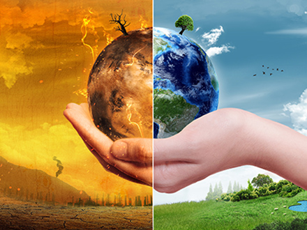

|good health and well being|
Brief information on the UN's goal of good health and well being
The United Nations' goal of good health and well-being is one of the Sustainable Development Goals (SDGs), specifically SDG 3. It aims to ensure healthy lives and promote well-being for all at all ages by 2030. Continue reading below to learn more:
Goal
The United Nations' Sustainable Development Goal (SDG),
"Good Health and Well-being," encompasses a comprehensive set of targets aimed at improving global health outcomes and ensuring equitable access to healthcare services.
Goal Statement:
"Ensure healthy lives and promote well-being for all at all ages."
This goal acknowledges that health is not just the absence of disease but a state of complete physical, mental, and social well-being.
At its core, SDG 3 aims to address disparities in healthcare access and outcomes, particularly in low-resource settings, by focusing on key areas such as maternal and child health, infectious diseases, non-communicable diseases (NCDs),
mental health, and access to essential healthcare services. By targeting preventable deaths, reducing the burden of diseases like HIV/AIDS, tuberculosis, and malaria, and strengthening healthcare systems, SDG 3 seeks to ensure that everyone,
regardless of age, gender, ethnicity, or socioeconomic status, can access quality healthcare services without facing financial hardship.
Goals and targetswithin the SDGs are interconnected components of a comprehensive framework for sustainable development. They provide a roadmap for addressing global challenges, guiding actions at the national, regional, and international levels to build a more equitable, prosperous, and sustainable future for all.
Targets

The United Nations' third SDG of "Good Health and Well-being" includes various targets aimed at reducing maternal mortality, ending preventable deaths of newborns and children under five years of age, combating communicable diseases such as HIV/AIDS, tuberculosis, malaria, and neglected tropical diseases, as well as non-communicable diseases like cardiovascular diseases and cancer. Additionally, the target aims to ensure Goal ( access to sexual and reproductive healthcare services, achieve universal health coverage, and strengthen the capacity of all countries in terms of early warning, risk reduction, and management of global health risks.
Furthermore, the target of SDG 3 emphasizes the need for equitable access to healthcare services, essential medicines, and vaccines for all. It calls for substantial increases in health financing, training, and recruitment of healthcare workers, particularly in developing countries. These targets face many challenges The goal also emphasizes the importance of addressing environmental factors that affect health, such as air and water pollution, as well as promoting policies that promote healthy lifestyles and well-being. Ultimately, the aim is to ensure that everyone, regardless of their income level or geographic location, can access quality healthcare services and live healthy lives.
Challenges
Achieving the United Nations' third SDG of "Good Health and Well-being" faces several challenges:
Inequality in Access to Healthcare: Disparities in healthcare access and quality persist both within and among countries. Marginalized populations, such as those living in poverty, rural areas, or conflict zones, often have limited access to essential healthcare services.
Climate Change and Environmental Health: Environmental factors, including climate change, air pollution, and inadequate sanitation, have significant implications for public health. Mitigating environmental risks and promoting sustainable practices are essential for safeguarding health and well-being.
Global Health Threats: Infectious diseases, antimicrobial resistance, and pandemics pose significant challenges to global health security. Addressing these threats requires international cooperation, robust healthcare systems, and effective surveillance and response mechanisms.
Addressing these challenges requires coordinated action from governments, international organizations, civil society, and the private sector. Efforts to strengthen healthcare systems, promote health equity, and address the social determinants of health are Important for achieving SDG 3 and improving the health and well-being of all individuals worldwide.
Importance
The United Nations' third SDG of "Good Health and Well-being" is critically important for several reasons:
Social Justice and Equity: SDG 3 underscores the importance of addressing health disparities and promoting equity in access to healthcare. It emphasizes the rights of all individuals to enjoy the highest attainable standard of physical and mental health, regardless of their socioeconomic status, geographic location, or other factors.
Environmental Sustainability:Health is intricately linked to environmental sustainability. Addressing environmental factors such as air and water pollution, climate change, and inadequate sanitation not only improves health outcomes but also promotes environmental sustainability and resilience to environmental threats.
uality of Life and Human Flourishing:Ultimately, SDG 3 is about promoting quality of life and enabling individuals to live healthy, fulfilling, and productive lives. Good health and well-being are fundamental human rights and foundational elements of sustainable development, contributing to overall human flourishing and societal well-being.
In summary, the importance of SDG 3 extends beyond health outcomes alone. It is essential for advancing social justice, reducing poverty and inequality, ensuring global health security, promoting environmental sustainability, and fostering human development and well-being for present and future generations.
In order to accomplish SDG 3 and enhance everyone's health and well-being globally, it is critical that we meet all of the goals and targets and overcome all challenges.